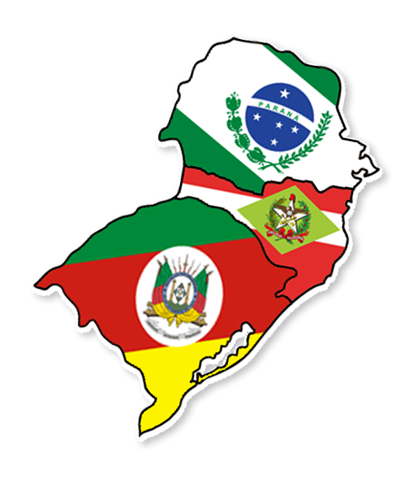

Explore o Sul
Descubra os encantos da Região Sul por meio de destinos, paisagens, tradições e experiências únicas. Nesta seção, o O Sulista apresenta conteúdos sobre pontos turísticos, roteiros, eventos e curiosidades que valorizam a diversidade cultural e natural dos estados do Sul do Brasil.

Mapa Turístico
Explore os principais destinos da Região Sul através do mapa interativo. Descubra cidades, atrações e pontos turísticos que destacam a riqueza cultural, histórica e natural da região.
Destinos em destaque
Conheça alguns dos destinos mais emblemáticos da Região Sul. De paisagens naturais impressionantes a atrações culturais e urbanas, cada lugar oferece experiências únicas para quem deseja explorar a diversidade e a beleza da região.
Planeje sua próxima viagem
Descubra novos destinos, conheça curiosidades e encontre inspiração para explorar as paisagens, culturas e tradições da Região Sul.
Dicas de Viagem
Onde Encontrar os Melhores Pacotes?
Encontre opções de hospedagem, transporte e passeios em plataformas especializadas e compare preços para planejar sua viagem com mais praticidade.
Melhor Época para Visitar
A Região Sul oferece experiências únicas em todas as estações do ano. Escolher a melhor época para viajar depende do tipo de passeio e das atividades que você deseja realizar.

☀️ Verão (dezembro a março)
Ideal para aproveitar praias, atividades ao ar livre e o litoral catarinense. As temperaturas são mais elevadas e as cidades litorâneas recebem grande número de visitantes.
🍂 Outono (março a junho)
Período com clima ameno e paisagens encantadoras. É uma ótima época para explorar cidades históricas, realizar passeios culturais e apreciar a gastronomia regional.

.jpg/330px-Neve_Caxias_do_Sul_(3).jpg)
❄️ Inverno (junho a setembro)
Perfeito para visitar a Serra Gaúcha, desfrutar do clima frio, experimentar vinhos e conhecer eventos típicos da estação. É uma das épocas mais procuradas por turistas.
🌸 Primavera (setembro a dezembro)
Período com clima ameno e paisagens encantadoras. É uma ótima época para explorar cidades históricas, realizar passeios culturais e apreciar a gastronomia regional.